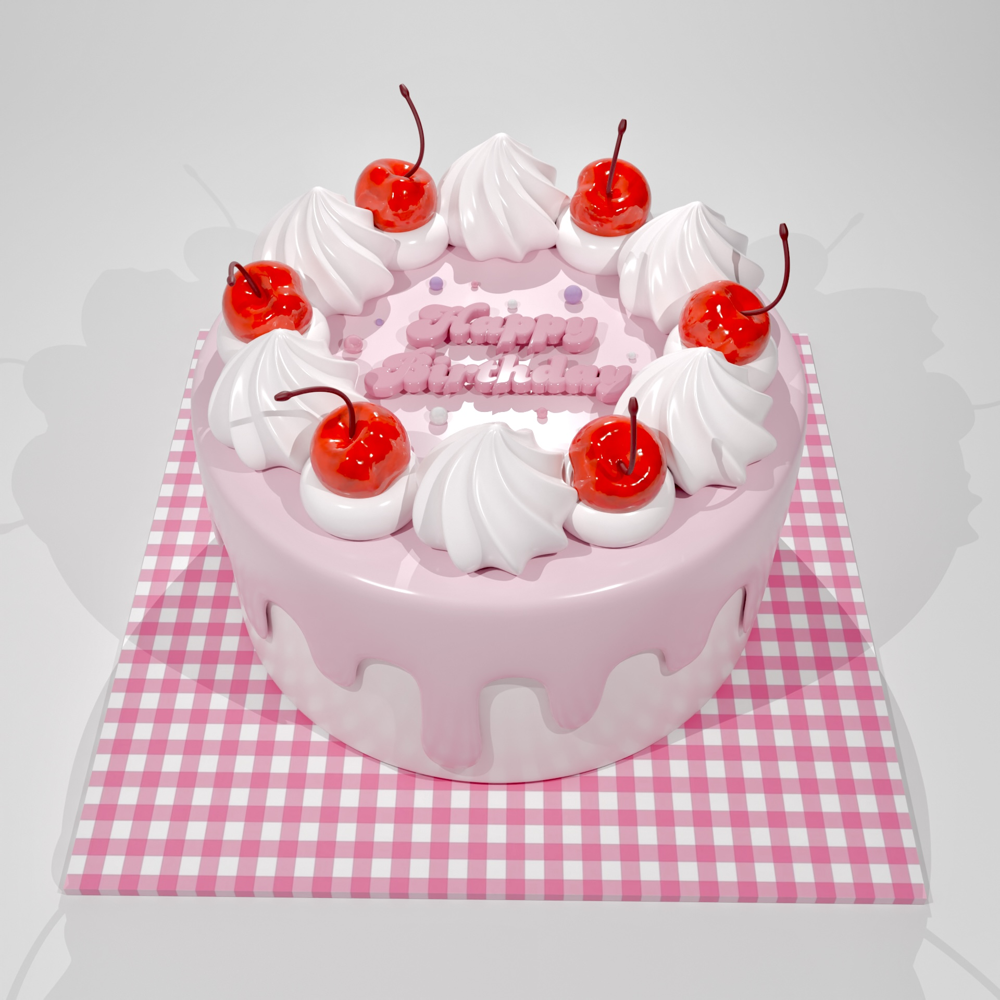

-
机と椅子
初めてBlenderを使って作った作品です。
操作が難しく、時間がかかりました。
キャンディ
Blenderを始めてから二日目に作ったものです。
既存の球の加工を覚えました。カプセル
マテリアルを使って、透けている様子を表現しました。
カラフルでポップな感じにしました。ハート
画像をエンプティにして不透明化し、画像に合わせて作りました。
ハートのバルーン
ハート型のバルーンが空を飛んでいる様子です。
バルーンのツヤっとした質感とシワを作ることが大変でした。
背景はHDRI画像を使って、空を表現しています。ゼリー
透け感のあるぷるんとしたゼリーです。
クリームを作ることが大変で、何度もやり直しました。 バースデーケーキ
韓国風のバースデーケーキです。
ソースが垂れているところと、ピンクでまとめて華やかな雰囲気にしたところが気に入っています。
ねこ、うさぎ、くまのぬいぐるみ
三匹の動物のぬいぐるみです。
ふわふわの質感を再現することが大変でした。レトロプリンとクリームソーダ
硬めのプリンと懐かしさのあるクリームソーダです。
ノードを使ってプリンの質感を出しました。
作ってきた作品の中で一番のお気に入りです。オールドファッションとアイスティー
ドーナツをたくさん作りました。
テクスチャペイントや、ノードを使ってドーナツの質感を表現しています。
いちごミルク
ファンシーないちごミルクを作りました。
ノードを使っていちごの粒感、まだらに混ざっている様子を表現しています。